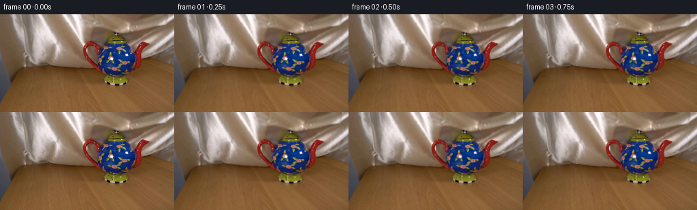
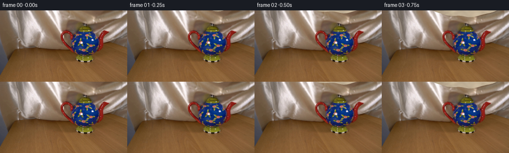
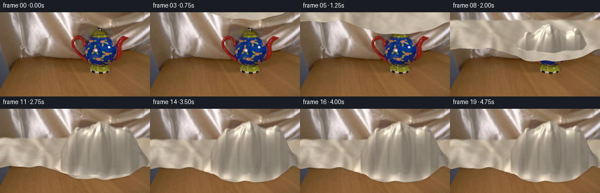
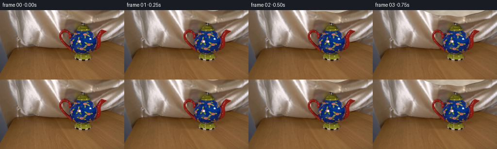
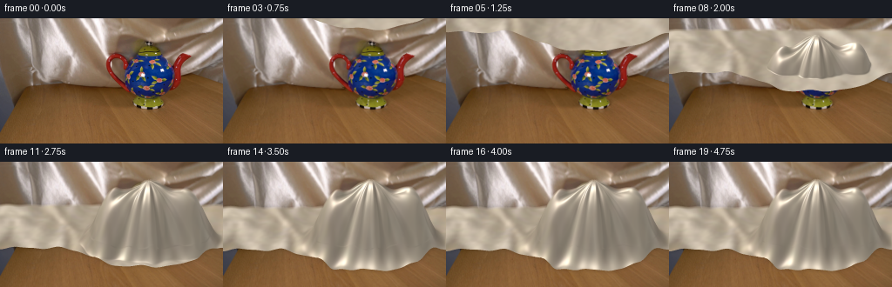
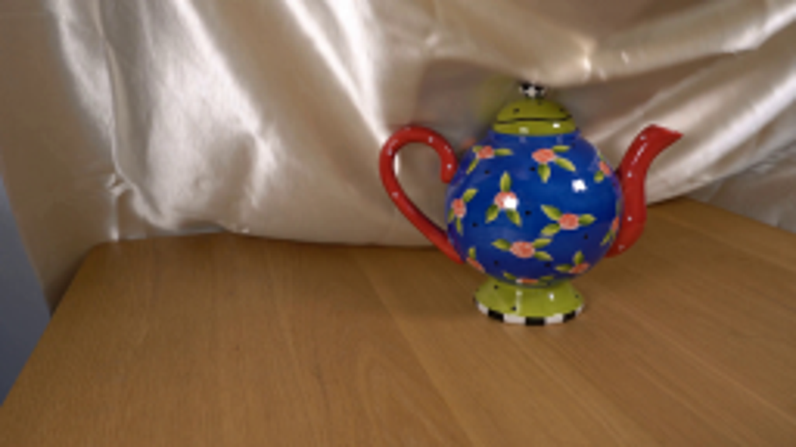
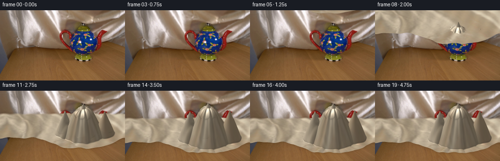
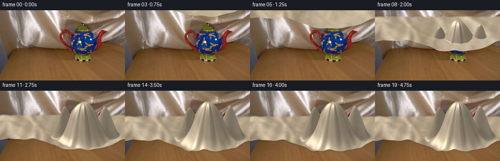
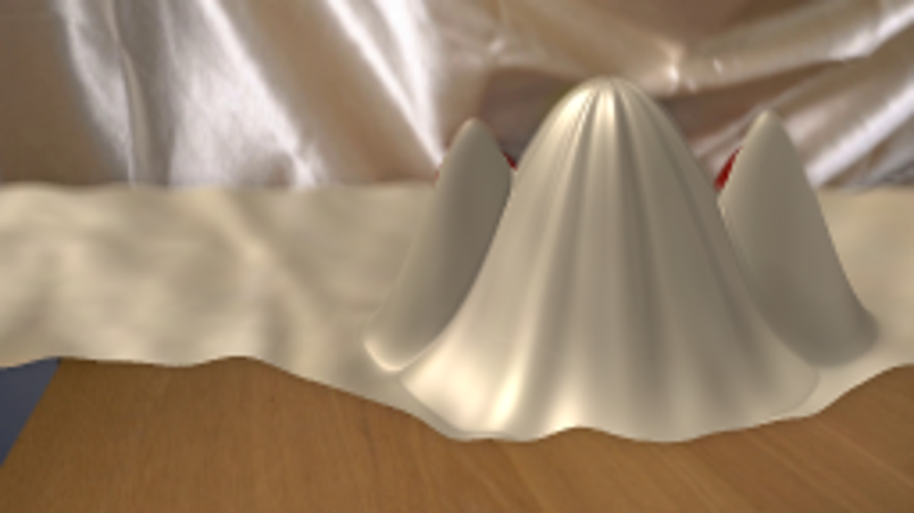

CODING AGENTS AS PIXEL WORLD MODELS
traex/GPT-6.1-Sol · 0157
点击播放 · 原生 RGB 像素
逐轮保存的候选
回放视频、检查图与代码变化。
每份候选均可单独播放。实际图片检查记录在下方工具轨迹中。
候选 01播放与检查图
点击播放 · 原生 RGB 像素


展开代码变化
--- 上一保存版本
+++ 本次保存版本
@@ -0,0 +1,136 @@
+from pathlib import Path
+import numpy as np
+from PIL import Image, ImageDraw
+import cv2
+from scipy.ndimage import gaussian_filter
+import artifact_io
+
+ROOT=Path(__file__).resolve().parent
+original=np.asarray(Image.open(ROOT/'first_frame.png').convert('RGB'))
+S=3
+W,H=256*S,144*S
+xx=(np.arange(W)+.5)/S
+# Screen-space orthographic camera, in tabletop coordinates.
+X=(xx-170.5)/25.4
+Z=np.linspace(-3.5,2.75,620)
+x,z=np.meshgrid(X,Z)
+r=np.sqrt(x*x+(z+.015)**2)
+# Rounded teapot, its lid, and the supporting handle and spout underneath the sheet.
+body=np.where(r<.80,1.22+np.sqrt(np.maximum(0,.955**2-r*r)),np.maximum(0,2.999-1.59*r))
+lid=np.maximum(0,2.52-1.90*r)
+handle=np.maximum(0,1.92-1.95*np.sqrt((x+1.47)**2+(z-.01)**2))
+spout=np.maximum(0,2.08-2.2*np.sqrt((x-1.74)**2+(z+.02)**2))
+base=np.maximum.reduce([body,lid,handle,spout])
+# Round the ridges where the loose silk bridges the different parts.
+base=gaussian_filter(base,(1.4,1.1))
+front= .63+1.73*np.exp(-((X+.12)/2.67)**4)+.09*np.sin(X*3.5)
+# Fold coordinates radiate gently from the upper lid and run into the skirt.
+a=np.arctan2(x,z+.2)
+fold=np.sin(a*12+.5)+.40*np.sin(a*21-1.4)
+fold_ampl=.078*(1-np.exp(-r*r/0.25))*np.exp(-r/3.6)
+fold_final=fold*fold_ampl
+# Source silk, used as a subtle woven / mottled reflectance variation.
+source=original[:77,20:119].astype(np.float32)
+source=cv2.resize(source,(256,200),interpolation=cv2.INTER_CUBIC)
+# Remove the large illumination scale from the silk sample; gloss below follows geometry.
+blur=cv2.GaussianBlur(source,(0,0),8)
+tex_detail=np.clip(source/(blur+1),.75,1.26)
+tex_low=blur/np.mean(blur,axis=(0,1),keepdims=True)
+texture=.77*tex_detail+.23*tex_low
+# Original silk/backdrop mask (the teapot is protected during gentle cloth movement).
+bgmask=Image.new('L',(256,144),0)
+d=ImageDraw.Draw(bgmask)
+d.polygon([(0,0),(255,0),(255,74),(222,65),(203,72),(189,79),(161,86),(137,83),(106,79),(68,76),(29,81),(12,101),(0,129)],fill=255)
+potpoly=[(170,24),(177,28),(184,39),(191,44),(199,53),(202,54),(205,44),(211,39),(220,42),(216,47),(209,54),(207,73),(200,87),(189,92),(185,98),(184,104),(171,106),(156,104),(152,100),(155,91),(145,86),(132,74),(125,63),(122,52),(124,44),(131,40),(139,42),(145,49),(151,43),(158,40),(162,29)]
+d.polygon(potpoly,fill=0)
+bgmask=np.asarray(bgmask).astype(float)/255
+bgmask=cv2.GaussianBlur(bgmask,(3,3),.4)
+bglarge=cv2.resize(original,(W,H),interpolation=cv2.INTER_CUBIC).astype(float)
+yy=np.arange(H)/S
+light=np.array([-.50,-.34,.80]);light/=np.linalg.norm(light)
+view=np.array([0,.91,.42]);view/=np.linalg.norm(view)
+Hv=(light+view);Hv/=np.linalg.norm(Hv)
+
+
+def render(index):
+ t=index/4
+ u=np.clip((t-.17)/3.02,0,1)
+ ease=u*u*(3-2*u)
+ plane=5.80*(1-ease)
+ settle=np.exp(-max(0,t-3.2)*3.5)
+ # A small propagating billow follows the hem as it lowers; it dies out on contact.
+ wav=.055*np.sin(x*2.9-z*2.3+t*4.2)*np.sin(np.clip(u*2.2,0,1)*np.pi/2)
+ wav*= (.20+.80*settle)
+ p=plane + .045*np.sin(2.1*x+1.2*z+t*2.2)*(1-ease)
+ final=np.maximum(0,base+fold_final+wav*np.minimum(1,base*1.5))
+ # Soft collision without any passage through the ceramic.
+ hh=(p+final+np.sqrt((p-final)**2+.035**2))*.5
+ # Extra loose folds at the apron on the tabletop.
+ apron=.019*(1-np.exp(-r))*np.sin(6*x+1.25*z+.15*np.sin(z*3))
+ hh+=apron*ease
+ dz,dx=np.gradient(hh,Z,X)
+ norm=np.stack([-dx,-dz,np.ones_like(dx)],axis=-1)
+ norm/=np.linalg.norm(norm,axis=2,keepdims=True)
+ diffuse=np.clip(norm@light,0,1)
+ nh=np.clip(norm@Hv,0,1)
+ spec=nh**27
+ # Anisotropic silk highlights: elongated along the weave rather than plastic points.
+ gloss= .10*(nh**7)+.49*spec
+ lumin=.54+.47*diffuse+gloss
+ # Soft trough occlusion for narrow folds.
+ crv=np.gradient(dx,X,axis=1)+np.gradient(dz,Z,axis=0)
+ lumin*=1-.075*np.clip(crv*.3,0,1)*ease
+ ux=((x+6.7)/10.2*255 +8*np.sin(z*.8)+7*np.sin(a)*ease).astype(np.float32)
+ vz=((z+3.5)/6.25*199).astype(np.float32)
+ mat=cv2.remap(texture,ux,vz,cv2.INTER_LINEAR,borderMode=cv2.BORDER_REFLECT_101)
+ rgb=np.array([188.,170.,143.])[None,None,:]*lumin[:,:,None]*mat
+ # Satin highlights become less yellow at grazing angles.
+ rgb+=gloss[:,:,None]*np.array([16.,20.,25.])
+ rgb=np.clip(rgb,0,255)
+ py=98.8 + 12.2*z-29.7*hh
+ canvas=bglarge.copy()
+ # The original upright silk moves minutely as the broad sheet comes forward.
+ oy,ox=np.mgrid[:144,:256].astype(np.float32)
+ move=(1-np.exp(-t*2))*(1-ease)*2.2
+ warped=cv2.remap(original,(ox+.32*move*np.sin(oy*.065)).astype(np.float32),(oy-move*(.75+.25*np.sin(ox*.06))).astype(np.float32),cv2.INTER_CUBIC,borderMode=cv2.BORDER_REFLECT)
+ back=original*(1-bgmask[:,:,None])+warped*bgmask[:,:,None]
+ canvas=cv2.resize(back.astype(np.float32),(W,H),interpolation=cv2.INTER_CUBIC)
+ # Render the height field front-to-back, retaining its closest visible branch.
+ coverage=np.zeros((H,W),float)
+ for col in range(W):
+ zi=np.searchsorted(Z,front[col])
+ ys=py[:zi+1,col]
+ # A record-minimum traversal handles the small self-occluding folds.
+ rev=ys[::-1]
+ keep=rev <= np.minimum.accumulate(rev)+1e-7
+ ids=np.arange(zi,-1,-1)[keep][::-1]
+ if len(ids)<2: continue
+ yp=py[ids,col]
+ top=yp[0];bottom=yp[-1]
+ lo=max(0,int(np.ceil(top*S-.5)));hi=min(H,int(np.floor(bottom*S-.5))+1)
+ if hi<=lo:continue
+ ypixels=(np.arange(lo,hi)+.5)/S
+ c=np.empty((hi-lo,3))
+ for channel in range(3):
+ c[:,channel]=np.interp(ypixels,yp,rgb[ids,col,channel])
+ # Feather hem and rear junction, subpixel antialiasing.
+ alpha=np.minimum(np.clip((ypixels-top)*S+.7,0,1),np.clip((bottom-ypixels)*S+.65,0,1))
+ # A silk-silk seam at the far side is gently merged into the hanging backdrop.
+ top_original=bgmask[np.minimum(143,(ypixels).astype(int)),min(255,int(xx[col]))]
+ join=np.clip((ypixels-top)/3.4,0,1)
+ alpha*=np.where(top_original>.7, .15+.85*join,1)
+ canvas[lo:hi,col]=canvas[lo:hi,col]*(1-alpha[:,None])+c*alpha[:,None]
+ coverage[lo:hi,col]=alpha
+ # Cast a soft contact shadow onto the wood, only outside the fabric.
+ shadow=cv2.GaussianBlur(coverage.astype(np.float32),(0,0),2.4*S)
+ sh=np.clip(shadow-coverage,0,1)*.23*ease
+ canvas*=1-sh[:,:,None]
+ output=cv2.resize(np.clip(canvas,0,255).astype(np.uint8),(256,144),interpolation=cv2.INTER_AREA)
+ return output
+
+if __name__=='__main__':
+ frames=[original.copy()]
+ for i in range(1,20):
+ frames.append(render(i))
+ frames=np.asarray(frames,dtype=np.uint8)
+ artifact_io.save(frames,ROOT)
候选 02播放与检查图
点击播放 · 原生 RGB 像素

展开代码变化
--- 上一保存版本
+++ 本次保存版本
@@ -16,18 +16,21 @@
x,z=np.meshgrid(X,Z)
r=np.sqrt(x*x+(z+.015)**2)
# Rounded teapot, its lid, and the supporting handle and spout underneath the sheet.
-body=np.where(r<.80,1.22+np.sqrt(np.maximum(0,.955**2-r*r)),np.maximum(0,2.999-1.59*r))
-lid=np.maximum(0,2.52-1.90*r)
-handle=np.maximum(0,1.92-1.95*np.sqrt((x+1.47)**2+(z-.01)**2))
-spout=np.maximum(0,2.08-2.2*np.sqrt((x-1.74)**2+(z+.02)**2))
-base=np.maximum.reduce([body,lid,handle,spout])
-# Round the ridges where the loose silk bridges the different parts.
-base=gaussian_filter(base,(1.4,1.1))
+body=2.52*np.exp(-(r/1.57)**2.25)
+lid=2.56*np.exp(-(r/.20)**2)
+handle=2.20*np.exp(-((x+1.47)/.79)**2-((z-.01)/.64)**2)
+spout=2.32*np.exp(-((x-1.76)/.77)**2-((z+.02)/.60)**2)
+stack=np.stack([body,lid,handle,spout],axis=0)
+# A taut sheet spans the support peaks, with softly curved free spans.
+ma=stack.max(axis=0)
+base=ma+.115*np.log(np.sum(np.exp((stack-ma)/.115),axis=0))-.115*np.log(4)*np.exp(-(r/2.9)**4)
+base=np.maximum(ma,base)
+base=gaussian_filter(base,(1.8,1.2))
front= .63+1.73*np.exp(-((X+.12)/2.67)**4)+.09*np.sin(X*3.5)
# Fold coordinates radiate gently from the upper lid and run into the skirt.
a=np.arctan2(x,z+.2)
fold=np.sin(a*12+.5)+.40*np.sin(a*21-1.4)
-fold_ampl=.078*(1-np.exp(-r*r/0.25))*np.exp(-r/3.6)
+fold_ampl=.051*(1-np.exp(-r*r/0.25))*np.exp(-r/3.6)
fold_final=fold*fold_ampl
# Source silk, used as a subtle woven / mottled reflectance variation.
source=original[:77,20:119].astype(np.float32)
@@ -36,7 +39,7 @@
blur=cv2.GaussianBlur(source,(0,0),8)
tex_detail=np.clip(source/(blur+1),.75,1.26)
tex_low=blur/np.mean(blur,axis=(0,1),keepdims=True)
-texture=.77*tex_detail+.23*tex_low
+texture=.90*tex_detail+.10*tex_low
# Original silk/backdrop mask (the teapot is protected during gentle cloth movement).
bgmask=Image.new('L',(256,144),0)
d=ImageDraw.Draw(bgmask)
@@ -56,7 +59,7 @@
t=index/4
u=np.clip((t-.17)/3.02,0,1)
ease=u*u*(3-2*u)
- plane=5.80*(1-ease)
+ plane=4.32*(1-ease)
settle=np.exp(-max(0,t-3.2)*3.5)
# A small propagating billow follows the hem as it lowers; it dies out on contact.
wav=.055*np.sin(x*2.9-z*2.3+t*4.2)*np.sin(np.clip(u*2.2,0,1)*np.pi/2)
@@ -76,12 +79,12 @@
spec=nh**27
# Anisotropic silk highlights: elongated along the weave rather than plastic points.
gloss= .10*(nh**7)+.49*spec
- lumin=.54+.47*diffuse+gloss
+ lumin=.63+.41*diffuse+gloss
# Soft trough occlusion for narrow folds.
crv=np.gradient(dx,X,axis=1)+np.gradient(dz,Z,axis=0)
lumin*=1-.075*np.clip(crv*.3,0,1)*ease
- ux=((x+6.7)/10.2*255 +8*np.sin(z*.8)+7*np.sin(a)*ease).astype(np.float32)
- vz=((z+3.5)/6.25*199).astype(np.float32)
+ ux=((x+6.7)/18.0*255 +4*np.sin(z*.8)+4*np.sin(a)*ease).astype(np.float32)
+ vz=((z+3.5)/12.25*199).astype(np.float32)
mat=cv2.remap(texture,ux,vz,cv2.INTER_LINEAR,borderMode=cv2.BORDER_REFLECT_101)
rgb=np.array([188.,170.,143.])[None,None,:]*lumin[:,:,None]*mat
# Satin highlights become less yellow at grazing angles.
候选 03播放与检查图
点击播放 · 原生 RGB 像素


展开代码变化
--- 上一保存版本
+++ 本次保存版本
@@ -16,10 +16,10 @@
x,z=np.meshgrid(X,Z)
r=np.sqrt(x*x+(z+.015)**2)
# Rounded teapot, its lid, and the supporting handle and spout underneath the sheet.
-body=2.52*np.exp(-(r/1.57)**2.25)
+body=2.40*np.exp(-(r/1.61)**3.20)
lid=2.56*np.exp(-(r/.20)**2)
-handle=2.20*np.exp(-((x+1.47)/.79)**2-((z-.01)/.64)**2)
-spout=2.32*np.exp(-((x-1.76)/.77)**2-((z+.02)/.60)**2)
+handle=2.27*np.exp(-((x+1.47)/1.04)**2-((z-.01)/1.00)**2)
+spout=2.34*np.exp(-((x-1.76)/.99)**2-((z+.02)/.94)**2)
stack=np.stack([body,lid,handle,spout],axis=0)
# A taut sheet spans the support peaks, with softly curved free spans.
ma=stack.max(axis=0)
@@ -29,7 +29,7 @@
front= .63+1.73*np.exp(-((X+.12)/2.67)**4)+.09*np.sin(X*3.5)
# Fold coordinates radiate gently from the upper lid and run into the skirt.
a=np.arctan2(x,z+.2)
-fold=np.sin(a*12+.5)+.40*np.sin(a*21-1.4)
+fold=np.sin(a*9+.5+.28*np.sin(r*2))+ .40*np.sin(a*17-1.4+r*.35)
fold_ampl=.051*(1-np.exp(-r*r/0.25))*np.exp(-r/3.6)
fold_final=fold*fold_ampl
# Source silk, used as a subtle woven / mottled reflectance variation.
@@ -79,14 +79,14 @@
spec=nh**27
# Anisotropic silk highlights: elongated along the weave rather than plastic points.
gloss= .10*(nh**7)+.49*spec
- lumin=.63+.41*diffuse+gloss
+ lumin=.67+.39*diffuse+gloss
# Soft trough occlusion for narrow folds.
crv=np.gradient(dx,X,axis=1)+np.gradient(dz,Z,axis=0)
lumin*=1-.075*np.clip(crv*.3,0,1)*ease
ux=((x+6.7)/18.0*255 +4*np.sin(z*.8)+4*np.sin(a)*ease).astype(np.float32)
vz=((z+3.5)/12.25*199).astype(np.float32)
mat=cv2.remap(texture,ux,vz,cv2.INTER_LINEAR,borderMode=cv2.BORDER_REFLECT_101)
- rgb=np.array([188.,170.,143.])[None,None,:]*lumin[:,:,None]*mat
+ rgb=np.array([184.,170.,150.])[None,None,:]*lumin[:,:,None]*mat
# Satin highlights become less yellow at grazing angles.
rgb+=gloss[:,:,None]*np.array([16.,20.,25.])
rgb=np.clip(rgb,0,255)
候选 05播放与检查图
点击播放 · 原生 RGB 像素


展开代码变化
--- 上一保存版本 +++ 本次保存版本 @@ -26,6 +26,15 @@ base=ma+.115*np.log(np.sum(np.exp((stack-ma)/.115),axis=0))-.115*np.log(4)*np.exp(-(r/2.9)**4) base=np.maximum(ma,base) base=gaussian_filter(base,(1.8,1.2)) +# Span the space between the handle, lid and the spout instead of following +# each separate ceramic protrusion down into a narrow valley. +ridge_x=np.array([-6,-3.2,-2.6,-2.15,-1.63,-1.05,-.53,0,.52,1.08,1.67,2.05,2.55,3.25,6]) +ridge_y=np.array([0,.14,.72,1.64,2.15,2.17,2.31,2.57,2.30,2.13,2.22,2.08,1.06,.19,0]) +ridge=gaussian_filter(np.interp(X,ridge_x,ridge_y),2.0) +width=1.31+.21*np.exp(-(X/1.2)**2) +bridge=ridge[None,:]*np.exp(-(np.abs(z)/width[None,:])**2.6) +base=np.maximum(base,bridge) +base=gaussian_filter(base,(2.0,1.5)) front= .63+1.73*np.exp(-((X+.12)/2.67)**4)+.09*np.sin(X*3.5) # Fold coordinates radiate gently from the upper lid and run into the skirt. a=np.arctan2(x,z+.2)
候选 06播放与检查图
点击播放 · 原生 RGB 像素

展开代码变化
--- 上一保存版本 +++ 本次保存版本 @@ -3,6 +3,7 @@ from PIL import Image, ImageDraw import cv2 from scipy.ndimage import gaussian_filter +from scipy.interpolate import PchipInterpolator import artifact_io ROOT=Path(__file__).resolve().parent @@ -30,16 +31,16 @@ # each separate ceramic protrusion down into a narrow valley. ridge_x=np.array([-6,-3.2,-2.6,-2.15,-1.63,-1.05,-.53,0,.52,1.08,1.67,2.05,2.55,3.25,6]) ridge_y=np.array([0,.14,.72,1.64,2.15,2.17,2.31,2.57,2.30,2.13,2.22,2.08,1.06,.19,0]) -ridge=gaussian_filter(np.interp(X,ridge_x,ridge_y),2.0) +ridge=gaussian_filter(PchipInterpolator(ridge_x,ridge_y)(X),5.0) width=1.31+.21*np.exp(-(X/1.2)**2) bridge=ridge[None,:]*np.exp(-(np.abs(z)/width[None,:])**2.6) -base=np.maximum(base,bridge) -base=gaussian_filter(base,(2.0,1.5)) +base=(base+bridge+np.sqrt((base-bridge)**2+.035**2))*.5 +base=gaussian_filter(base,(5.5,6.0)) front= .63+1.73*np.exp(-((X+.12)/2.67)**4)+.09*np.sin(X*3.5) # Fold coordinates radiate gently from the upper lid and run into the skirt. a=np.arctan2(x,z+.2) -fold=np.sin(a*9+.5+.28*np.sin(r*2))+ .40*np.sin(a*17-1.4+r*.35) -fold_ampl=.051*(1-np.exp(-r*r/0.25))*np.exp(-r/3.6) +fold=np.sin(a*12+.5+.32*np.sin(r*2))+ .40*np.sin(a*21-1.4+r*.35) +fold_ampl=.072*(1-np.exp(-r*r/0.25))*np.exp(-r/3.6) fold_final=fold*fold_ampl # Source silk, used as a subtle woven / mottled reflectance variation. source=original[:77,20:119].astype(np.float32)
可观测工具轨迹
实际执行的命令与返回图片。
命令 1exit 0
/bin/bash -lc 'ls -la && cat prompt.txt && cat GENERATION_RULES.md'
命令 2exit 0
/bin/bash -lc "cat artifact_io.py && python - <<'PY'
from PIL import Image
im=Image.open('first_frame.png');print(im.size); im.resize((1024,576)).save('.tmp/enlarged.png')
PY"命令 3exit 0
/bin/bash -lc "python - <<'PY' import importlib.util for p in ['numpy','scipy','cv2','numba']: print(p, bool(importlib.util.find_spec(p))) PY"
命令 4exit 1
/bin/bash -lc "cat > generate.py <<'PY'
from pathlib import Path
import numpy as np
from PIL import Image, ImageDraw
import cv2
from scipy.ndimage import gaussian_filter
import artifact_io
ROOT=Path(__file__).resolve().parent
original=np.asarray(Image.open(ROOT/'first_frame.png').convert('RGB'))
S=3
W,H=256*S,144*S
xx=(np.arange(W)+.5)/S
# Screen-space orthographic camera, in tabletop coordinates.
X=(xx-170.5)/25.4
Z=np.linspace(-3.5,2.75,620)
x,z=np.meshgrid(X,Z)
r=np.sqrt(x*x+(z+.015)**2)
# Rounded teapot, its lid, and the supporting handle and spout underneath the sheet.
body=np.where(r<.80,1.22+np.sqrt(np.maximum(0,.955**2-r*r)),np.maximum(0,2.999-1.59*r))
lid=np.maximum(0,2.52-1.90*r)
handle=np.maximum(0,1.92-1.95*np.sqrt((x+1.47)**2+(z-.01)**2))
spout=np.maximum(0,2.08-2.2*np.sqrt((x-1.74)**2+(z+.02)**2))
base=np.maximum.reduce([body,lid,handle,spout])
# Round the ridges where the loose silk bridges the different parts.
base=gaussian_filter(base,(1.4,1.1))
front= .63+1.73*np.exp(-((X+.12)/2.67)**4)+.09*np.sin(X*3.5)
# Fold coordinates radiate gently from the upper lid and run into the skirt.
a=np.arctan2(x,z+.2)
fold=np.sin(a*12+.5)+.40*np.sin(a*21-1.4)
fold_ampl=.078*(1-np.exp(-r*r/0.25))*np.exp(-r/3.6)
fold_final=fold*fold_ampl
# Source silk, used as a subtle woven / mottled reflectance variation.
source=original[:77,20:119].astype(np.float32)
source=cv2.resize(source,(256,200),interpolation=cv2.INTER_CUBIC)
# Remove the large illumination scale from the silk sample; gloss below follows geometry.
blur=cv2.GaussianBlur(source,(0,0),8)
tex_detail=np.clip(source/(blur+1),.75,1.26)
tex_low=blur/np.mean(blur,axis=(0,1),keepdims=True)
texture=.77*tex_detail+.23*tex_low
# Original silk/backdrop mask (the teapot is protected during gentle cloth movement).
bgmask=Image.new('L',(256,144),0)
d=ImageDraw.Draw(bgmask)
d.polygon([(0,0),(255,0),(255,74),(222,65),(203,72),(189,79),(161,86),(137,83),(106,79),(68,76),(29,81),(12,101),(0,129)],fill=255)
potpoly=[(170,24),(177,28),(184,39),(191,44),(199,53),(202,54),(205,44),(211,39),(220,42),(216,47),(209,54),(207,73),(200,87),(189,92),(185,98),(184,104),(171,106),(156,104),(152,100),(155,91),(145,86),(132,74),(125,63),(122,52),(124,44),(131,40),(139,42),(145,49),(151,43),(158,40),(162,29)]
d.polygon(potpoly,fill=0)
bgmask=np.asarray(bgmask).astype(float)/255
bgmask=cv2.GaussianBlur(bgmask,(3,3),.4)
bglarge=cv2.resize(original,(W,H),interpolation=cv2.INTER_CUBIC).astype(float)
yy=np.arange(H)/S
light=np.array([-.50,-.34,.80]);light/=np.linalg.norm(light)
view=np.array([0,.91,.42]);view/=np.linalg.norm(view)
Hv=(light+view);Hv/=np.linalg.norm(Hv)
def render(index):
t=index/4
u=np.clip((t-.17)/3.02,0,1)
ease=u*u*(3-2*u)
plane=5.80*(1-ease)
settle=np.exp(-max(0,t-3.2)*3.5)
# A small propagating billow follows the hem as it lowers; it dies out on contact.
wav=.055*np.sin(x*2.9-z*2.3+t*4.2)*np.sin(np.clip(u*2.2,0,1)*np.pi/2)
wav*= (.20+.80*settle)
p=plane + .045*np.sin(2.1*x+1.2*z+t*2.2)*(1-ease)
final=np.maximum(0,base+fold_final+wav*np.minimum(1,base*1.5))
# Soft collision without any passage through the ceramic.
hh=(p+final+np.sqrt((p-final)**2+.035**2))*.5
# Extra loose folds at the apron on the tabletop.
apron=.019*(1-np.exp(-r))*np.sin(6*x+1.25*z+.15*np.sin(z*3))
hh+=apron*ease
dz,dx=np.gradient(hh,Z,X)
norm=np.stack([-dx,-dz,np.ones_like(dx)],axis=-1)
norm/=np.linalg.norm(norm,axis=2,keepdims=True)
diffuse=np.clip(norm@light,0,1)
nh=np.clip(norm@Hv,0,1)
spec=nh**27
# Anisotropic silk highlights: elongated along the weave rather than plastic points.
gloss= .10*(nh**7)+.49*spec
lumin=.54+.47*diffuse+gloss
# Soft trough occlusion for narrow folds.
crv=np.gradient(dx,X,axis=1)+np.gradient(dz,Z,axis=0)
lumin*=1-.075*np.clip(crv*.3,0,1)*ease
ux=((x+6.7)/10.2*255 +8*np.sin(z*.8)+7*np.sin(a)*ease).astype(np.float32)
vz=((z+3.5)/6.25*199).astype(np.float32)
mat=cv2.remap(texture,ux,vz,cv2.INTER_LINEAR,borderMode=cv2.BORDER_REFLECT_101)
rgb=np.array([188.,170.,143.])[None,None,:]*lumin[:,:,None]*mat
# Satin highlights become less yellow at grazing angles.
rgb+=gloss[:,:,None]*np.array([16.,20.,25.])
rgb=np.clip(rgb,0,255)
py=98.8 + 12.2*z-29.7*hh
canvas=bglarge.copy()
# The original upright silk moves minutely as the broad sheet comes forward.
oy,ox=np.mgrid[:144,:256].astype(np.float32)
move=(1-np.exp(-t*2))*(1-ease)*2.2
warped=cv2.remap(original,ox+.32*move*np.sin(oy*.065),oy-move*(.75+.25*np.sin(ox*.06)),cv2.INTER_CUBIC,borderMode=cv2.BORDER_REFLECT)
back=original*(1-bgmask[:,:,None])+warped*bgmask[:,:,None]
canvas=cv2.resize(back.astype(np.float32),(W,H),interpolation=cv2.INTER_CUBIC)
# Render the height field front-to-back, retaining its closest visible branch.
coverage=np.zeros((H,W),float)
for col in range(W):
zi=np.searchsorted(Z,front[col])
ys=py[:zi+1,col]
# A record-minimum traversal handles the small self-occluding folds.
rev=ys[::-1]
keep=rev <= np.minimum.accumulate(rev)+1e-7
ids=np.arange(zi,-1,-1)[keep][::-1]
if len(ids)<2: continue
yp=py[ids,col]
top=yp[0];bottom=yp[-1]
lo=max(0,int(np.ceil(top*S-.5)));hi=min(H,int(np.floor(bottom*S-.5))+1)
if hi<=lo:continue
ypixels=(np.arange(lo,hi)+.5)/S
c=np.empty((hi-lo,3))
for channel in range(3):
c[:,channel]=np.interp(ypixels,yp,rgb[ids,col,channel])
# Feather hem and rear junction, subpixel antialiasing.
alpha=np.minimum(np.clip((ypixels-top)*S+.7,0,1),np.clip((bottom-ypixels)*S+.65,0,1))
# A silk-silk seam at the far side is gently merged into the hanging backdrop.
top_original=bgmask[np.minimum(143,(ypixels).astype(int)),min(255,int(xx[col]))]
join=np.clip((ypixels-top)/3.4,0,1)
alpha*=np.where(top_original>.7, .15+.85*join,1)
canvas[lo:hi,col]=canvas[lo:hi,col]*(1-alpha[:,None])+c*alpha[:,None]
coverage[lo:hi,col]=alpha
# Cast a soft contact shadow onto the wood, only outside the fabric.
shadow=cv2.GaussianBlur(coverage.astype(np.float32),(0,0),2.4*S)
sh=np.clip(shadow-coverage,0,1)*.23*ease
canvas*=1-sh[:,:,None]
output=cv2.resize(np.clip(canvas,0,255).astype(np.uint8),(256,144),interpolation=cv2.INTER_AREA)
return output
if __name__=='__main__':
frames=[original.copy()]
for i in range(1,20):
frames.append(render(i))
frames=np.asarray(frames,dtype=np.uint8)
artifact_io.save(frames,ROOT)
PY
python generate.py"命令 5exit 0
/bin/bash -lc "sed -i 's/ox+.32\\*move\\*np.sin(oy\\*.065),oy-move\\*(.75+.25\\*np.sin(ox\\*.06))/(ox+.32*move*np.sin(oy*.065)).astype(np.float32),(oy-move*(.75+.25*np.sin(ox*.06))).astype(np.float32)/' generate.py OPENBLAS_NUM_THREADS=1 python generate.py"
命令 6exit 0
/bin/bash -lc "cp generate.py .tmp/generate_v1.py
python - <<'PY'
p='generate.py'
s=open(p).read()
a=s.index('body=np.where');b=s.index('front= ',a)
s=s[:a]+'''body=2.52*np.exp(-(r/1.57)**2.25)
lid=2.56*np.exp(-(r/.20)**2)
handle=2.20*np.exp(-((x+1.47)/.79)**2-((z-.01)/.64)**2)
spout=2.32*np.exp(-((x-1.76)/.77)**2-((z+.02)/.60)**2)
stack=np.stack([body,lid,handle,spout],axis=0)
# A taut sheet spans the support peaks, with softly curved free spans.
ma=stack.max(axis=0)
base=ma+.115*np.log(np.sum(np.exp((stack-ma)/.115),axis=0))-.115*np.log(4)*np.exp(-(r/2.9)**4)
base=np.maximum(ma,base)
base=gaussian_filter(base,(1.8,1.2))
''' + s[b:]
s=s.replace('fold_ampl=.078','fold_ampl=.051')
s=s.replace('plane=5.80*(1-ease)','plane=4.32*(1-ease)')
s=s.replace('texture=.77*tex_detail+.23*tex_low','texture=.90*tex_detail+.10*tex_low')
s=s.replace('ux=((x+6.7)/10.2*255 +8*np.sin(z*.8)+7*np.sin(a)*ease)','ux=((x+6.7)/18.0*255 +4*np.sin(z*.8)+4*np.sin(a)*ease)')
s=s.replace('vz=((z+3.5)/6.25*199)','vz=((z+3.5)/12.25*199)')
s=s.replace('lumin=.54+.47*diffuse+gloss','lumin=.63+.41*diffuse+gloss')
open(p,'w').write(s)
PY
OPENBLAS_NUM_THREADS=1 python generate.py"命令 7exit 0
/bin/bash -lc "python - <<'PY'
from PIL import Image
Image.open('frames/19.png').resize((1024,576)).save('.tmp/final_big.png')
PY"命令 8exit 0
/bin/bash -lc "cp generate.py .tmp/generate_v2.py
python - <<'PY'
p='generate.py';s=open(p).read();s=s.replace('2.52*np.exp(-(r/1.57)**2.25)','2.40*np.exp(-(r/1.61)**3.20)');s=s.replace('2.20*np.exp(-((x+1.47)/.79)**2-((z-.01)/.64)**2)','2.27*np.exp(-((x+1.47)/1.04)**2-((z-.01)/1.00)**2)');s=s.replace('2.32*np.exp(-((x-1.76)/.77)**2-((z+.02)/.60)**2)','2.34*np.exp(-((x-1.76)/.99)**2-((z+.02)/.94)**2)');s=s.replace('fold=np.sin(a*12+.5)+.40*np.sin(a*21-1.4)','fold=np.sin(a*9+.5+.28*np.sin(r*2))+ .40*np.sin(a*17-1.4+r*.35)');s=s.replace('lumin=.63+.41*diffuse+gloss','lumin=.67+.39*diffuse+gloss');s=s.replace('rgb=np.array([188.,170.,143.])','rgb=np.array([184.,170.,150.])');open(p,'w').write(s)
PY
OPENBLAS_NUM_THREADS=1 python generate.py"命令 9exit 0
/bin/bash -lc "cp generate.py .tmp/generate_v3.py
python - <<'PY'
p='generate.py';s=open(p).read();at=s.index('base=gaussian_filter');end=s.index('front=',at)
s=s[:at]+'''base=gaussian_filter(base,(1.8,1.2))
# Span the space between the handle, lid and the spout instead of following
# each separate ceramic protrusion down into a narrow valley.
ridge_x=np.array([-6,-3.2,-2.6,-2.15,-1.63,-1.05,-.53,0,.52,1.08,1.67,2.05,2.55,3.25,6])
ridge_y=np.array([0,.14,.72,1.64,2.15,2.17,2.31,2.57,2.30,2.13,2.22,2.08,1.06,.19,0])
ridge=gaussian_filter(np.interp(X,ridge_x,ridge_y),2.0)
width=1.31+.21*np.exp(-(X/1.2)**2)
bridge=ridge[None,:]*np.exp(-(np.abs(z)/width[None,:])**2.6)
base=np.maximum(base,bridge)
base=gaussian_filter(base,(2.0,1.5))
''' +s[end:]
open(p,'w').write(s)
PY
OPENBLAS_NUM_THREADS=1 python generate.py"命令 10exit 0
/bin/bash -lc "python - <<'PY'
p='generate.py';s=open(p).read();s=s.replace('from scipy.ndimage import gaussian_filter','from scipy.ndimage import gaussian_filter\\nfrom scipy.interpolate import PchipInterpolator');s=s.replace('ridge=gaussian_filter(np.interp(X,ridge_x,ridge_y),2.0)','ridge=gaussian_filter(PchipInterpolator(ridge_x,ridge_y)(X),5.0)');s=s.replace('base=np.maximum(base,bridge)\\nbase=gaussian_filter(base,(2.0,1.5))','base=(base+bridge+np.sqrt((base-bridge)**2+.035**2))*.5\\nbase=gaussian_filter(base,(5.5,6.0))');s=s.replace('fold=np.sin(a*9+.5+.28*np.sin(r*2))+ .40*np.sin(a*17-1.4+r*.35)','fold=np.sin(a*12+.5+.32*np.sin(r*2))+ .40*np.sin(a*21-1.4+r*.35)');s=s.replace('fold_ampl=.051','fold_ampl=.072');open(p,'w').write(s)
PY
OPENBLAS_NUM_THREADS=1 python generate.py"命令 11exit 0
/bin/bash -lc "python - <<'PY'
import numpy as np
from PIL import Image
from pathlib import Path
frames=np.stack([np.asarray(Image.open(p)) for p in sorted(Path('frames').glob('*.png'))])
assert frames.shape==(20,144,256,3) and frames.dtype==np.uint8
assert np.array_equal(frames[0],np.asarray(Image.open('first_frame.png')))
print('Verified: 20 RGB frames, 256Ã144; frame 00 identical.')
print('Artifacts: pixels.npz, index.html, inspection.png, generate.py')
PY"视觉工具实际返回图片 1

视觉工具实际返回图片 2

视觉工具实际返回图片 3

视觉工具实际返回图片 4

视觉工具实际返回图片 5

视觉工具实际返回图片 6

视觉工具实际返回图片 7

保存候选 6 份；完成命令 11 次；可验证图片返回 7 张。原始 API 响应与完整日志保留在本地。